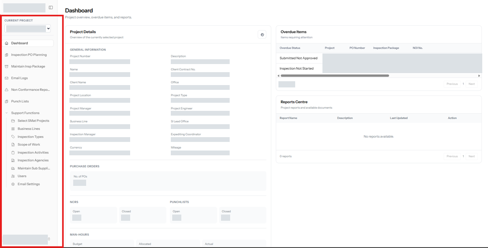

Enterprise application modernization.
MSIM V2 — Source Inspection Management
Conceptual architecture
Simplified public-facing view; not a complete deployment or security diagram.

Business problem
Legacy inspection workflows needed a more maintainable, responsive and configurable application.
My contribution
Full-stack development, Oracle integration, reporting, authentication and workflow implementation.
Engineering decisions
Separate application workflows from configurable report layouts; use server-side pagination for large grids and queued email for communication.
Technical challenges
Oracle compatibility, identity integration, report configuration and inspection status transitions.
Business value
Centralizes inspection work and supports configurable reporting without redesigning every report.
Implementation status & limitations
Rebuild features documented; production acceptance, authorization enforcement and performance benchmarks require validation. AI extraction is planned.
Measurement plan
Measure representative grid load times, report preparation time and authorization test coverage.